조경기사 (2014-09-20 기출문제)
1과목: 조경사
1. 평면기하학식 정원양식을 확립한 프랑스의 조경가 앙드레 르 노트르의 작품이 아닌 것은?
- 퐁텐블로(fontainebleau)
- 샹티(chantilly)
- 프티 트리아농(petit trianon)
- 튈러리(tuilereies)
(정답률: 65%)

2. 르네상스 시대 알베르티(Alverti)의 부지선정에 대한 이론이 아닌 것은?
- 배수가 잘 되는 견고한 부지
- 태양이 이루는 각도를 고려한 부지 방향
- 인근 도시와의 연결성 고려
- 계절에 다른 풍향과 부지와의 관계 고려
(정답률: 70%)
3. 용주사는 현륭원(顯隆園)의 원찰로 일반사찰에서는 찾기 어려운 구성요소를 볼 수 있는데 이에 해당되지 않는 것은?
- 석조 해태상
- 꽃담
- 대우석의 삼태극 무늬
- 기단 상면의 전돌 포장
(정답률: 57%)
4. 중국 한나라 때의 태액지(太液池)에 대한 설명으로 틀린 것은?
- 신선사상을 반영한 정원양식이다.
- 못 속에 봉래, 방장, 영주의 세 섬을 축조하였다.
- 주로 직선으로 된 연못의 서쪽 남북축선 상에 궁전이 배치되었고, 부속건물들은 연못의 남쪽에 배치되었다.
- 지반에는 청동이나 대리석으로 만든 조수와 용어 등의 조각을 배치하였다.
(정답률: 61%)
5. 일본의 전통석조방식 가운데 하나인 7⋅5⋅3 석조 방식으로 정원을 꾸민 곳은?(오류 신고가 접수된 문제입니다. 반드시 정답과 해설을 확인하시기 바랍니다.)
- 계리궁
- 대덕사
- 용안사
- 수학원이궁
(정답률: 64%)
6. 중국 한(漢)나라의 조경유적이 아닌 것은?
- 장안의 상림원
- 태액지의 삼신산
- 건장궁의 신명대
- 난지궁의 장지
(정답률: 60%)
7. 12단의 테라스와 캐스케이드, 차경원으로 유명한 인도 무굴 왕조의 정원은?
- 샤리마르 바그(Shalimar Bagh)
- 니샤트 바그(Nishat Bagh)
- 아차발 바그(Achabal Bagh)
- 이티맛드 우드 다우라(I timad-up-Daula)
(정답률: 72%)
8. 조선시대 한양의 도성계획은 중국 주나라의 '주례고공기(周禮考工記)'에 의해 이루어졌다. 경복궁을 중심으로 좌측에 설치한 도시 기능은?
- 종묘
- 사직단
- 시장
- 조정
(정답률: 70%)
9. 다음 중 정면 5칸, 측면 1칸 맞배지붕, 방 마루, 부엌이 존재하는 창덕궁 후원의 정자는?
- 취규정
- 존덕정
- 용산정
- 승재정
(정답률: 42%)
10. 경관을 취하는 대표적 조경시설인 정자가 부채꼴형태로 조영된 사례로만 짝지어진 것은?
- 경복궁 후원의 향원정, 사자림의 진취정
- 창덕궁 후원의 관람정, 졸정원의 여수동좌헌
- 창경궁 낙선재 후원의 상량정, 유원의 호복정
- 덕수궁 후원의 정관헌, 망사원의 냉천정
(정답률: 81%)
11. 중세 조경의 특징으로 옳은 것은?
- 왕족의 빌라가 발달하였다.
- 전기에는 성관정원이 발달하였다.
- 실용적인 클로이스터 가든을 조성하였다.
- 오픈 노트(open knot)와 클로즈드(closed knot)의 두기법이 성관정원에 행해졌다.
(정답률: 47%)
12. 다음 중 헤네랄리페 정원의 특징이 아닌 것은?
- 노단으로 된 정원이다.
- 정원을 내려다 볼 수 있게 처리되어 있다.
- 강력한 주축선에 의해 지배된다.
- 계단, 물계단 등은 르네상스시대 이탈리아의 별장 디자인의 전조가 된다.
(정답률: 66%)
13. 예성강변에 위치한 장원정(長源亭)의 설명이 옳은 것은?
- 고려시대 별서정원
- 고려시대 이궁
- 조선시대 행궁
- 조선시대 별서정원
(정답률: 63%)
14. 비구 혹은 고목(古木)과 가장 가까운 조경시설은?
- 수로 유도
- 석가산
- 경관목
- 야간 조명용 석등
(정답률: 47%)
15. 경복궁 교태전 후원의 아미산과 관련 없는 것은?
- 장대석으로 축조된 화계
- 향원지를 파낸 흙으로 만든 인공산
- 아미산은 중국 선산(仙山)의 이름을 따옴
- 커다란 흰 바탕의 직사각형에 길상의 세계인 십장생이 조각된 굴뚝 배치
(정답률: 62%)
16. 다음 설명 중 ( )안에 공통으로 들어갈 내용으로 알맞은 것은?
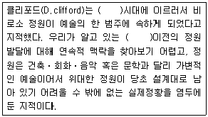
- 산업혁명
- 르노트르
- 르네상스
- 근세
(정답률: 80%)
17. 소쇄원내의 명칭 중'부모에 대한 효'와 관계있는 것은?
- 오곡문
- 애양단
- 광풍각
- 제월당
(정답률: 70%)
18. 유상곡수연을 위한 유배거(流盃渠) 시설과 관련 없는 것은?
- 중국 송나라의 졸정원유적
- 왕희지의 난정기 내용
- 일본 나라사 평성궁 유적
- 중국의 영조법식 서적의 내용
(정답률: 50%)
19. 다음 중 방장선산의 신선사상을 가장 먼저 상징화한 곳은?
- 부여의 궁남지
- 서울의 애련지
- 남원의 광한루 지당
- 개성 송도의 동지
(정답률: 70%)
20. 다음 중 중국 정원에 대한 설명으로 틀린 것은?
- 승덕 피서산장은 청대(淸代)의 이궁(離宮)에 속한다.
- 후한시대에 포(圃)는 금수를 키우던 곳을 말한다.
- 졸정원, 유원, 사자림 등은 소주(蘇州)의 정원이다.
- 송(宋)나라 때는 태호석에 의해 석가산을 축조하는 정원이 조성되었다.
(정답률: 73%)
2과목: 조경계획
21. 자연공원법에 의한 공원위원회의 심의를 생략할 수 있는 공원계획의 경미한 사항의 변경에 해당하는 것은?
- 공원자연보존지구를 공원자연환경지구로 변경하는 경우
- 공원마을지구를 공원자연보존지구로 변경하는 경우
- 공원집단시설지구를 공원자연마을지구로 변경하는 경우
- 공원집단시설지구 외의 지구에 계획된 공원시설을 공원집단시설지구로 위치를 변경하는 경우
(정답률: 40%)
22. 조경관련 시설의 일조를 고려한 배치에 관한 설명으로 옳지 않은 것은?
- 육상경기장은 태양광선에 의한 눈부심을 최소화하기위해, 트랙과 필드의 장축은 북-남 혹은 북북서-남남동방향으로 배치한다.
- 야구장 방위는 내⋅외야수가 오후의 태양을 등지고 경기할 수 있도록 홈플레이트를 동쪽과 북서쪽 사이에 자리 잡게 한다.
- 야외공연장은 주변 환경에 주거단지 등이 있으면 그곳의 정면방향으로 배치하여, 주거민들의 자유로운 감상과 흥미를 유도한다.
- 테니스 코트는 경기를 위해 장축을 정남~북을 기준으로 동서 5~15°편차 내의 범위로 설치하는 것이 좋다.
(정답률: 68%)
23. 건축법상 면적이 200m2이상인 대지에 건축을 하는 건축주는 용도지역 및 건축물의 규모에 따라 당해 지방자치단체의 조례가 정하는 기준에 따라 대지에 조경이나 그 밖에 필요한 조치를 하여야 한다. 다음 중 건축물에 대하여 조경 등의 조치를 하지 아니할 수 있는 경우에 해당하지 않는 것은?
- 축사
- 녹지지역에 건축하는 건축물
- 면적 5천 제곱미터 미만인 대지에 건축하는 공장
- 연면적의 합계가 1천 500제곱미터 미만인 상업지역의 물류시설로서 국토교통부령으로 정하는 것
(정답률: 50%)
24. 지리정보체계(GIS)의 특징에 해당하지 않는 것은?
- 한번 구축된 주제도는 수정이 용이하다.
- 공간정보에 속성정보가 연결되어 분석이 쉽다.
- 제작기간이 짧고, 비용이 적게 소요되어 일반적으로 활용된다.
- 구축된 주제도는 저장, 화면에 올리기, 출력 등이 용이하다.
(정답률: 61%)
25. 오픈 스페이스(open space)의 개방성을 가장 잘 설명한 것은?
- 부지의 경계가 없는 것을 의미한다.
- 부지를 개방하는 시간으로 나타낸다.
- 부지에 건물이 적게 들어서 있는 정도를 의미한다.
- 이용자들이 얼마나 자유롭게 활동할 수 있는 가를 의미한다.
(정답률: 58%)
26. 프리드만(Friedmann, 1978)이 주장한 이용 후 평가의 고려 요소가 아닌 것은?
- 이용자
- 관찰자
- 설계과정
- 물리⋅사회적 환경
(정답률: 47%)
27. 시설물의 설치 및 부지면적의 제한과 관련된 다음 설명 중 ( )안에 들어갈 각각의 내용으로 부적합한 것은? (단, 체육시설의 설치⋅이용에 관한 법률 시행령 적용)
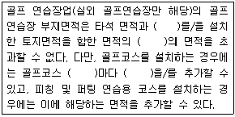
- 2홀
- 13000m2
- 보호망
- 2배
(정답률: 51%)
28. 다음 중 도로설계에 대한 설명으로 틀린 것은?
- 교통량이 적은 노선보다 많은 노선에서 설계속도를 빠르게 잡는다.
- 일반적으로 설계속도는 평지부보다 산지부가 더 빠르다.
- 도로의 속도는 지점속도, 주행속도, 구간속도, 운전속도, 임계속도 등으로 세분될 수 있다.
- 단거리 교통의 지방도로 보다 장거리 교통이 많은 간선 도로에서 설계속도를 빠르게 잡는다.
(정답률: 72%)
29. 다음 중 기본계획안(Masterplan)에 포함되지 않아도 되는 것은?
- 토지이용계획
- 교통동선계획
- 시설물배치계획
- 정지계획
(정답률: 67%)
30. 자연환경보전기본계획의 시행 관련 설명 중 ( )안에 알맞은 것은?
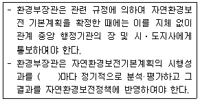
- 6개월
- 1년
- 2년
- 3년
(정답률: 50%)
31. 단지 내 보행자 공간의 역할과 가장 거리가 먼 것은?
- 산책, 놀이, 대화 등의 생활공간으로 활용될 수 있다.
- 쾌적한 보행자 공간의 조성을 통해 연도상가의 환경을 개선시킬 수 있다.
- 특정 주택단지의 정체성을 높여 저소득 계층과의 구분이 가능하도록 해 준다.
- 안락하고 편리한 보행자 공간을 이용하여 보행자들이 목적지까지 편리하게 도달할 수 있게 한다.
(정답률: 71%)
32. 동질적인 성격을 가진 비교적 큰 규모의 경관을 구분하는 것으로 주로 지형 및 지표상태에 따라 구분하는 것을 무엇이라고 하는가?
- 경관요소
- 경관유형
- 토지형태
- 경관단위
(정답률: 56%)
33. 경분야의 구조물 중 식생벽(벽면녹화)의 계획 시 고려해야 할 사항으로 옳지 않은 것은?
- 일반적인 요구 성능 사항으로는 구조물 설치장소가 인공구조물 상부일 경우 설치지역을 방수층이 파손되지 않도록 설치해야 한다.
- 성능평가 항목으로는 구조적 안정성, 시각적 안전성, 주변 환경과 맞는 친환경적인 재료 사용 등을 고려한다.
- 콘크리트 구조물의 내구성 평가는 의무적으로 표면에 유출되지 않은 내부의 균열이나 작은 균열의 검출을 위한 방법으로 가장 좋은 파괴검사만을 선택하여 실시한다.
- 도시미관의 경관적 목적 및 도심 열섬현상 완화, 미기 후조절, 단열⋅방음⋅방진효과, 온실가스 흡수효과 등을 위하여 기존 수직적 구조물 및 실내공간의 표면에 부가⋅설치한다.
(정답률: 74%)
34. 비교적 높은 공간적 밀도하에서 혼잡(crowding)을 느끼는 정도는 구성원들 간의 아는 정도와 환경(공간)에 대한 익숙한 정도에 따라 달라진다. 다음 중 혼잡을 느끼는 정도가 가장 높은 것은?
- 서로 잘 아는 그룹이 익숙한 환경 내에 있을 때
- 서로 잘 아는 그룹이 익숙하지 못한 환경 내에 있을 때
- 서로 잘 모르는 그룹이 익숙한 환경 내에 있을 때
- 서로 잘 모르는 그룹이 익숙하지 못한 환경 내에 있을 때
(정답률: 73%)
35. 다음 중 일반적인 공장부지 내의 공간요소를 적합하게 배치하기 위한 계획기준으로 맞는 것은?
- 생산시설지구는 정문에 가깝게 배치한다.
- 복리후생지구는 생산시설에 이격시킨다.
- 주거시설지구는 생산시설에서 근접시킨다.
- 환경시설지구는 주민의 출입을 가급적 금지시킨다.
(정답률: 56%)
36. 다음 중 조경계획과정에서 대안 설정의 기준으로서 일반적으로 가장 중요하게 고려되는 것은?
- 동선 및 식재계획
- 식재 및 토지이용계획
- 동선 및 토지이용계획
- 토지이용 및 시설물 배치계획
(정답률: 67%)
37. 도시공원 및 녹지 등에 관한 법률 시행규칙상 도시 농업 공원의 공원시설 부지 면적 기준으로 가장 적합한 것은?
- 100분의 20 이상
- 100분의 40 이하
- 100분의 50 이하
- 100분의 60 이하
(정답률: 54%)
38. 용도지역의 세분 중 도시⋅부도심의 상업기능 및 업무 기능의 확충을 위하여 필요한 상업지역은? (단, 국토의 계획 및 이용에 관한 법률 시행령을 적용)
- 중심상업지역
- 일반상업지역
- 근린상업지역
- 유통상업지역
(정답률: 46%)
39. 다음 중 녹화계약의 체결 시 정하여야 하는 내용에 해당하지 않는 것은?
- 녹화지역의 토양에 관한 사항
- 도시녹화의 관리기간에 관한 사항
- 심어 가꾸는 수목 등의 종류, 수 및 장소에 관한 사항
- 묘목 등 도시녹화재료의 소유권 및 권리에 관한 사항
(정답률: 42%)
40. 관광지의 수요예측 모형 중 방문자 수를 피설명 변수(dependent variable)로 그리고 방문자 수에 영향을 미치는 변수들을 설명변수(independent variables)로 설정하여 방문자수를 선형적으로 예측하는 통계적 방법을 무엇이라 하는가?
- Judgement Aided Models
- Regression Analysis
- Gravity Model
- Delphi Technique
(정답률: 45%)
3과목: 조경설계
41. 다음 중 케빈 린치의 도시 이미지에 관한 설명으로 틀린 것은?
- 관찰자에 따라 도시에 관한 이미지가 다를 수 있다.
- 대상물의 물리적 성질은 형상, 색채, 배치 등이 될 수 있다.
- 도시의 이미지와 관련된 것은 대체로 개인의 이미지이다.
- 이미지를 불러일으키기 위해서는 대상물의 물리적 성질이 마음속의 어느 요소와 관련 되어야 한다.
(정답률: 56%)
42. 환경색채디자인에서 주의할 점이 아닌 것은?
- 인공 시설물의 색채는 제외시킨다.
- 자연환경과 인공환경의 조화를 고려해야 한다.
- 대상 지역 전체의 색채이미지와 부분의 색채이미지가 잘 조화될 수 있도록 계획한다.
- 외부 환경색채 디자인의 경우 광, 온도, 기후 등 대상 지역에 대한 정확한 조사를 바탕으로 색채계획이 이루어져야 한다.
(정답률: 69%)
43. 조경설계기준상 놀이공간의 구성 및 시설의 배치로 옳지 않은 것은?
- 놀이터와 도로, 주차장 기타 인접 시설물과의 사이에는 폭 2m 이상의 녹지공간을 배치한다.
- 그네, 회전무대 등 충돌 위험이 많은 시설물은 놀이동선과 통과동선이 상충되지 않도록 고려한다.
- 미끄럼대 등 높이 3.5m가 넘는 시설물은 인접한 주택과 정면 배치를 피하고, 활주판, 그네 등 시설물의 주 이용방향과 놀이터의 출입로가 주택의 정면과 서로 마주치지 않도록 배치한다.
- 공통주택단지의 어린이놀이터는 건축물의 외벽 각 부분으로부터 5m 이상 떨어진 곳에 배치하는 등'주택 건설기준 등에 관한 규정'에 적합해야 한다.
(정답률: 49%)
44. 다음 중 황금비에 대한 설명으로 옳지 않은 것은?
- 피타고라스가 발견하였다.
- 파르테논 신전에도 적용되었다.
- 한 선분을 둘로 나눌 때 전체와 긴 선분의 비율이 긴선분과 짧은 선분의 비율과 일치하는 비율이다.
- 사람들은 무의식 속에 길이와 폭의 다양한 비율을 보여주더라도 대부분 황금비인 0.618에 가까운 비율을 선호한다.
(정답률: 53%)
45. 색채대비와 동화현상에 대한 설명으로 틀린 것은?
- 채도대비는 유채색과 무채색 사이에서 더욱 뚜렷하게 느낄 수 있다.
- 같은 색이라도 면적이 커지면 본래의 색보다 더 밝게 보이는 현상을 명도대비라 한다.
- 대비효과는 순간적으로 일어나며 계속 하여한 곳을 보게 되면 대비효과는 적어진다.
- 색들에게 서로 영향을 주어서 인접색에 가까운 색으로 느껴지는 것을 동화현상이라고 한다.
(정답률: 58%)
46. 조경시설물의 구성원칙에 대한 설명으로 옳지 않은 것은?
- 구조적 안정성을 통하여 통일성을 얻을 수 있다.
- 조화는 개체적인 요소간의 관계로서 조경시설물이 서로 일치되는 상태를 말한다.
- 통일성은 우세와 종속, 결집, 군집 등의 미적효과를 통하여 얻을 수 있다.
- 통일성은 분리된 조경시설물이 전체적으로 하나로 구성되어 보이는 것이다.
(정답률: 35%)
47. 형식미학(形式美學)에 대한 설명으로 옳은 것은?
- 상징미학과 동일한 개념으로 사용되고 있다.
- 형식(form)은 내용(content)에 상대되는 개념이다.
- 형태로부터 느껴지는 감정이나 의미에 관심을 갖는다.
- 환경적 자극으로부터 연상되는 의미를 전달받는 2차적 지각의 영역에 해당한다.
(정답률: 35%)
48. 자연경관에서 일정한 간격을 두고 변화되는 형태, 색채, 선, 소리 등은 다음 중 어떠한 형식미의 원리인가?
- 비례미(proportion)
- 통일미(unity)
- 운율미(rhythm)
- 변화미(variety)
(정답률: 65%)
49. 다음 중 교차점광장의 결정기준에 해당하지 않는 것은? (단, 도시⋅군계획시설의 결정⋅구조 및 설치기준에 관한 규칙을 적용)
- 자동차전용도로의 교차지점인 경우에는 입체교차방식으로 할 것
- 주민의 사교, 오락, 휴식 및 공동체 활성화 등을 위하여 근린주거구역별로 설치할 것
- 혼잡한 주요도로의 교차점에서 각종 차량과 보행자를 원활히 소통시키기 위하여 필요한 곳에 설치할 것
- 주간선도로의 교차지점인 경우에는 접속도로의 기능에 따라 입체교차방식 등에 의한 평면교차방식으로 할 것
(정답률: 53%)
50. 일반적인 조경설계 과정에서 만들어지는 그래픽 제작물에 해당되지 않는 것은?
- 이행서류
- 표현도
- 과업지시서
- 단지분석도
(정답률: 52%)
51. 오픈 스페이스의 기능에 대한 설명으로 틀린 것은?
- 시냇물, 연못, 동산 등과 같은 자연 경관적 요소들을 제공한다.
- 기존의 자연환경물을 보전⋅향상시켜 줄 수 있는 수단을 제공한다.
- 공기정화를 위한 순환통로의 기능을 수행함으로써 미기후의 형성에 영향을 준다.
- 오픈스페이스의 적극적 확보를 위하여 평탄한 곳과 접근성이 뛰어난 곳을 우선 확보하여야 한다.
(정답률: 49%)
52. 조경설계기준상 생물 서식공간의 조성은 종의 멸종위기를 최소화하거나 평형종 수를 극대화하기 위하여 적용하는데, 그 원리로 적당하지 않는 것은?
- 거리는 인접한 공간이 가까울수록 효과적이다.
- 서로 떨어진 공간을 이동통로로 연결하는 것이 효과적이다.
- 여러 개의 공간이 같은 거리를 유지하며 직선적으로 배열되는 것이 효과적이다.
- 면적이 클수록 종 보존에 효과적이다. (같은 크기인 경우 큰 단위 공간 하나가 여러 개의 작은 공간보다 효과적이다.)
(정답률: 55%)
53. 색의 무게감에 가장 큰 영향을 미치는 속성은?
- 명도
- 색상
- 질감
- 채도
(정답률: 56%)
54. 멀고 가까운 거리감을 느낄 수 있도록 하나의 시점과 물체의 각 점을 방사선으로 이어서 그리는 도법은?
- 투시도법
- 구조 투상도법
- 부등각 투상법
- 축측 투상도법
(정답률: 55%)
55. 도로에는 차도와 접속하여 길어깨를 설치하여야 한다. 도로의 횡단구성 중 도시지역 고속도로의 차도 오른쪽에 설치하는 길어깨의 최소 기준 폭(미터)은 얼마인가? (단, 일방통행도로 등 분리도로의 차도 왼쪽에 설치하는 경우는 제외한다.)
- 1.5
- 2.0
- 2.5
- 3.0
(정답률: 47%)
56. 조경설계기준상의'실개울'에 관련한 설명으로 옳은 것은?
- 평균 물 깊이는 30~50cm 정도로 한다.
- 지형의 기울어짐은 적으나 높이차가 있는 곳에 배치하며, 못이나 분수 등과의 분리배치를 고려한다.
- 설계대상 공간의 어귀나 중심광장⋅주요 조형요소⋅결절점의 시각적 초점 등으로 경관효과가 큰 곳을 제외 하여 배치한다.
- 물의 순환으로 설계할 경우 이동 수량으 고려하여 충분한 용량의 하부 못이나 저류조를 반영한다.
(정답률: 42%)
57. 대지안의 조경면적의 산정 기준으로 틀린 것은? (단, 국토교통부 고시 내용을 적용)
- 하나의 조경시설공간의 면적은 10m2 이상이어야 한다.
- 조경면적은 식재된 면적과 조경시설 공간 면적을 합한 면적으로 산정한다.
- 하나의 식재면적은 한 변의 길이가 2m 이상으로2m2이상이어야 한다.
- 식재면적은 당해 지방자치단체의 조례에서 정하는 조경면적의 50% 이상이어야 한다.
(정답률: 48%)
58. 조경설계기준상의 디딤돌(징검돌) 놓기 설계시 옳지 않은 것은?
- 보행에 적합하도록 지면과 수평으로 배치한다.
- 디딤돌 및 징검돌의 장축은 진행방향에 평행이 되도록 배치한다.
- 디딤돌은 2연석, 3연석, 2⋅3연석, 3⋅4연석 놓기를 기본으로 한다.
- 정원을 제외한 배치 간격은 어린이와 어른의 보폭을 고려하여 결정하되, 일반적으로 40~ 70cm로 하며 돌과 돌 사이의 간격이 8~ 10cm정도가 되도록 배치한다.
(정답률: 56%)
59. 도면에서 그림과 같은 수치기입 방법으로 옳지 않은 것은?
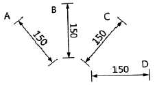
- A
- B
- C
- D
(정답률: 66%)
60. 다음 제도의 선 중 위계(hierarchy)가 굵음에서 가는 쪽으로 올바르게 배열된 것은?
- 단면선 → 구조물 → 주차선
- 치수선 → 단면선 → 건물외곽
- 식생 → 인출선 → 도로
- 건물외곽 → 도로 → 주차선
(정답률: 68%)
4과목: 조경식재
61. 식물을 건축적, 미적, 기상학적, 공학적 등으로 이용할 수 있다. 다음 중 건축적 이용으로 나타나는 기능은?
- 기상조절
- 방풍효과
- 토양침식의 조절
- 사생활 보호
(정답률: 63%)
62. Euonymus fortunei var. radicans은 어떤 나무의 학명인가?
- 사철나무
- 줄사철나무
- 노박덩굴
- 참빗살나무
(정답률: 55%)
63. 다음 중 군락측정과 관련된 설명으로 옳지 않은 것은?
- 군도 : 식물이 군생하는 상태를 나타내는 측도
- 우점도 : 군락 내에서 제일 큰 종이 차지하는 비율
- 밀도 : 단위면적당 식물의 개체 수
- 피도 : 식물이 공간을 피복하고 있는 상태를 나타내는 측도
(정답률: 55%)
64. 다음 수종 중 흰색 꽃이 피는 것은?
- Chaenomeles sinensis koehne
- Poncirus trifoliata Raf.
- Punica granatum L.
- Cercis chinensis Bunge
(정답률: 27%)
65. 다음 중 수피에 코르크가 발달하는 수목이 아닌 것은?
- Quercus variabilis Blume
- Prunus mandshurica Koehne
- Phellodendron amurense Rupr.
- Aphananthe aspera Planch.
(정답률: 41%)
66. 다음 [보기] 수종들의 공통점은?
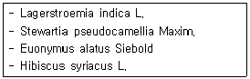
- 모두 우리나라 자생종이다.
- 성장은 모두 낙엽활엽교목이다.
- 꽃은 모두 봄철에 핀다.
- 열매 종류는 모두 삭과이다.
(정답률: 36%)
67. 임해매립지 식재 시 염분피해를 줄이기 위해 취할 수 있는 방법으로 가장 부적합한 것은?
- 지하수위를 낮추기 위해 맹암거를 설치한다.
- 염분용탈을 위해 지속적으로 관수한다.
- 화산재를 이용하여 염분을 제거한다.
- 마운딩을 하여 식재하거나 객토를 한다.
(정답률: 60%)
68. 종자 및 종자번식에 관한 설명으로 틀린 것은?
- 휴면타파를 위한 층적처리는 고온 건조한 조건에서 50일 전후의 일정기간을 경과시켜야 한다.
- 발아한 유식물체에 광선이 부족하면 황화현상이 일어날 수 있다.
- 종자파종방법은 직파(Field sowing)와 상파(Bedsowing)로 구분한다.
- 종자는 일반적으로 배, 배유, 종피와 주요한 부분으로 나뉜다.
(정답률: 52%)
69. 다음 중 북아메리카 원산의 수목은?
- 노각나무
- 쉬나무
- 정향나무
- 아까시나무
(정답률: 57%)
70. 다음 중 화재의 방지 또는 확산을 막거나 지연시킬 목적으로 식재하는 방화수종으로 가장 부적합한 것은?
- Camellia japonica L.
- Daphniphyllum macropodum Miq.
- Euonymus japonicus Thumb.
- Abelia mosanensis T.H.Chung ex Nakai
(정답률: 30%)
71. 다음 중 엽면적 지수(LAI)를 바르게 나타낸 것은?
- 단위면적 / 지상의 엽면적 합계
- 지상의 엽면적 합계 / 단위면적
- (지상의'엽면적'합계)2 / 단위면적
- 지상의'엽면적'합계 / (단위면적)2
(정답률: 50%)
72. 다음 중 Sophora japonica L. 에 대한 설명으로 틀린 것은?
- 잎은 어긋나기하며 홀수 깃모양겹잎이다.
- 꽃은 원추화서로 5월에 자주색으로 핀다.
- 열매는 염주모양이며, 10월경에 성숙한다.
- 일년생가지는 녹색이며, 나무껍질은 회암 갈색으로 세로로 갈라진다.
(정답률: 46%)
73. 식재설계 시 고려해야 할 수목의 물리적 요소에 관계없는 것은?
- 형태
- 질감
- 색채
- 균형
(정답률: 61%)
74. 다음 지피식물 중 해안가 생육에는 가장 부적합 하지만 건조지의 생육에는 가장 적합한 것은?
- 털머위
- 바위솔
- 모람
- 흰대극
(정답률: 63%)
75. 다음 중 협죽도과(科)의 수종은?
- 좀작살나무
- 목서
- 마삭줄
- 치자나무
(정답률: 56%)
76. 지피류 및 초화류 식재시의 기준에 어긋나는 것은?
- 종자의 규격은 중량단위의 수량과 순량률 및 발아율로, 초화류의 규격은 분얼, 포기 등으로 표시한다.
- 지피류 및 초화류는 뿌리가 충실하며, 흙이 충분히 붙어 있어야 한다.
- 토심은 초장의 높이와 잎, 분얼의 상태에 따라 다르나 지피류 식재를 위한 표토 최소심은 0.5~0.6m 내외로 한다.
- 왜성 대나무류 및 지피류 식재간격은 설계도서에 지정되지 않은 경우 0.15m(44주/m2)를 표준으로 한다.
(정답률: 54%)
77. 다음 중 일반적으로 생장속도가 가장 빠른 수종은?
- Diospyros kaki Thunb.
- Populus tomentiglandulosa T.B.Lee
- Acer palmatum Thunb.
- Quercus dentata Thunb.
(정답률: 46%)
78. 다음 중 조경 수목에 관한 설명으로 옳은 것은?
- Fatsia japonica (Thunb.) Decne. & Planch.와Ardisia pusilla A. DC.는 음수로 분류된다.
- Juniperus chinensis L. 와 Nerium indicum Mill. 는 내음성이 강하다.
- 지하수위가 높은 곳에 자라는 수종은 바람에 강하다.
- Ligustrum obtusifolium Siebold & Zucc.는 맹아력이 약하므로 Buxus Koreana Naki ex Chung & al.처럼 전정할 수 없다.
(정답률: 39%)
79. 자연풍경식 식재에 관한 설명으로 옳지 않은 것은?
- 수종의 선택과 식재가 자유로움
- 비대칭적 균형감과 심리적 질서감에 초점을 둠
- 평면구성에 중점을 두어 식물의 조형미를 강조함
- 자연풍경과 유사한 경관을 재현하는 식재 방법임
(정답률: 64%)
80. 다음 중 일정한 거리에서 볼 때 수관의 질감이 상대적으로 가장 거친 수종은?
- Sophora japonica L.
- Robinia pseudoacacia L.
- Quercus dentata Thunb.
- Gleditsia Japonica Miq.
(정답률: 52%)
5과목: 조경시공구조학
81. 다음 목재의 역학적 성질에 가장 영향을 미치지 않는 것은?
- 비중
- 옹이
- 나이테
- 함수율
(정답률: 54%)
82. 도로에서 곡선부의 길이가 짧거나 교각이 작을 경우 생길 수 있는 현상이 아닌 것은?
- 고속의 경우 사고의 위험성이 증가한다.
- 운전자에게 도로가 끊어진 것처럼 보인다.
- 운전자에게 곡선의 길이가 실지보다 길게 느껴진다.
- 운전자의 핸들조작이 빨라져 운전 쾌적도가 저하된다.
(정답률: 63%)
83. 그림과 같은 단순보에 등분포하중이 작용할 때 최대 굽힘 모멘트는 얼마인가?
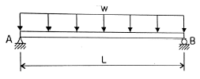
- wL2/32
- wL2/16
- wL28
- xL2/4
(정답률: 46%)
84. 다음 중 공사 발주자가 공사 발주를 위한 예정가격 산정순서로 올바른 것은?
- 현지조사 → 설계도작성 → 시방서작성 → 단가결정 →수량산출 → 공사비산정 → 예정가격결정
- 현지조사 → 설계도작성 → 수량산출 → 단가결정 → 공사비산정 → 시방서작성 → 예정가격결정
- 현지조사 → 설계도작성 → 수량산출 → 단가결정 → 시방서작성 → 공사비작성 → 예정가격 결정
- 현지조사 → 설계도작성 → 수량산출 → 시방서작성 →단가결정 → 공사비산정 → 예정가격 결정
(정답률: 29%)
85. 특수강 중 하나인 스테인리스강에 대한 설명으로 옳지 않은 것은?
- 탄소량이 적고 내식성이 우수하다.
- 전기저항이 작고 열전도율이 크다.
- 크롬, 니켈 등이 주성분으로 구성되어 있다.
- 경도에 비해 가공성이 좋으며 납땜도 가능하다.
(정답률: 47%)
86. 고온⋅고압의 증기솥 속에서 상압보다 높은 압력으로 고온의 수증기를 사용하여 실시하는 콘크리트의 양생방법은?
- 촉진양생
- 증기양생
- 고주파양생
- 오토클레이브양생
(정답률: 40%)
87. 아래와 같은 배합설계에 의해 콘크리트 1m3을 배합하는데 필요한 단위잔골재량(kg)은 약 얼마인가? (단, 소수점 아래는 버림한다.)
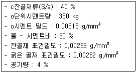
- 175
- 350
- 698
- 1⑤9
(정답률: 37%)
88. 목재의 전기 저항에 대한 설명 중 맞는 것은?
- 온도가 상승하면 감소한다.
- 섬유주향에 따라 영향을 받지 않는다.
- 함수율이 증가할수록 저항율은 직선으로 증가한다.
- 전기저항에 대한 밀도의 영향은 함수율에 비하여 중요하다.
(정답률: 36%)
89. 토양입자가 수직방향으로 배열되어 있고, 찰흙의 함량이 많은 염류토의 심토에서 보기 쉬우며, 건조지방의 심토에서 발달되는 토양 구조는?
- 판상
- 주상
- 괴상
- 입상
(정답률: 50%)
90. 노선의 곡선 중에서 반지름이 각기 다른 2개의 원곡선으로 구성되고 이 곡선의 연속점에서 공통접선을 가지며 곡선중심이 공통접선에 대하여 서로 반대쪽에 있는 곡선을 무엇이라고 하는가?
- 단곡선
- 복곡선
- 반향곡선
- 클로소이드
(정답률: 55%)
91. 건설공사의 관리 중 시공계획의 검토 과정에 있어 '조달계획'에 해당하는 것은?
- 계약서 검토
- 예정공정표 작성
- 하도급 발주계획
- 실행예산서 작성
(정답률: 58%)
92. 다음 네트워크(Network)에서 작업 E의 LF값으로 옳은 것은?
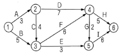
- 10일
- 12일
- 13일
- 15일
(정답률: 44%)
93. 콘크리트의 신축이음과 관련된 설명 중 틀린 것은?
- 신축이음에는 필요에 따라 이음재, 지수판 등을 배치하여야 한다.
- 신축이음은 양쪽의 구조물 혹은 부재가 구속된 구조이어야 한다.
- 신축이음의 단차를 피할 필요가 있는 경우에는 장부나 홈을 두는 것이 좋다.
- 신축이음의 단차를 피할 필요가 있는 경우에는 전단연결재를 사용하는 것이 좋다.
(정답률: 50%)
94. 국제토양학회의 토양 입경 구분이 틀린 것은?
- 자갈 : ＞ 2.0mm
- 굵은 모래 : 2.0 ~ 0.2mm
- 가는 모래 : 0.2 ~ 0.02mm
- 점토 : 0.02 ~ 0.002mm
(정답률: 51%)
95. 다음 중 CPM기법의 공정표 설명으로 틀린 것은?
- 반복사업 등에 이용
- 공사비 절감이 주목적
- 불명확한 신공법 프로젝트의 공정관리 기법
- 시간의 경과와 시행되는 작업을 네트(망)로 표현
(정답률: 57%)
96. 그림과 같이 85m에서부터 5m 간격으로 증가하는 등고선이 삽입된 지형도에서 85m이상의 체적을 구한다면 약 얼마인가? (단, 정상의 높이는 108m이고, 마지막 1구간은 원추공식으로 구한다.)
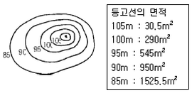
- 12677 m3
- 12707 m3
- 12894 m3
- 12516 m3
(정답률: 41%)
97. 비탈면의 잔디식재 공사에 대한 표준시방서 내용으로 틀린 것은?
- 잔디생육에 적합한 토양의 비탈면 기울기가 1:1보다 완만할 때에는 비탈면을 일시에 녹화하기 위해서 흙이 붙어있는 재배된 잔디를 사용하여 붙인다.
- 잔디고정을 떼꽂이를 사용하여 잔디 1매당 2개 이상 견실하게 고정하며, 시공 후에는 모래나 흙으로 잔디 붙임면을 얇게 덮은 후 고루 두들겨 다져준다.
- 비탈면 줄떼다지기는 잔디폭이 0.1m 이상 되도록 하고, 비탈면에 0.1m 이내 간격으로 수평골을 파서 수평으로 심고 다짐을 철저히 한다.
- 비탈면 전면(평떼)붙이기는 줄눈을 틈새없이 붙이고 십자줄이 형성되도록 붙이며, 잔디 소요면적은 비탈면면적의 10%를 추가 적용한다.
(정답률: 57%)
98. 다음 지점(Supporting point)을 도해한 것 중 구분, 지점상태, 표시법이 모두 올바르게 연결된 것은?
- 이동단
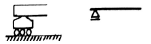
- 회전단
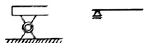
- 이동단
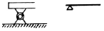
- 회전단
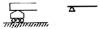
(정답률: 49%)
99. 지명경쟁입찰 제도에 있어서 입찰자를 지명하는 가장 중요한 목적은?
- 공기를 단축시키기 위하여
- 공사비를 저렴하게 하기 위하여
- 부적당한 업자를 배제하기 위하여
- 예산의 범위 내에서 완성시키기 위하여
(정답률: 58%)
100. 0.7m3용량의 유압식 백호우를 이용하여 작업상태가 양호한 자연 상태의 사질토를 굴착 후 선회각도 90°로 덤프트럭에 적재하려 할 때 시간당 굴착작업량은?(단, 버 킷계수 1.1, L은 1.25, 1회 사이클 시간은 16초, 토질별 작업효율은 0.85이다.)
- 1.79m3
- 3.07m3
- 117.81m3
- 184.08m3
(정답률: 49%)
6과목: 조경관리론
101. 다음 중 생리적 반응 시 산성비료인 것은?
- 요소
- 중과인산석회
- 염화칼륨
- 용성인비
(정답률: 35%)
102. 다음 중 모과나무에 발생되는 병이 아닌 것은?
- 붉은별무늬병
- 점무늬병
- 갈색무늬병
- 잎떨림병
(정답률: 46%)
103. 다음 중 토양에서 질소기아 현상은 탄질비가 최소얼마 이상일 때 일어나는가? (문제 오류로 실제 시험에서는 모두 정답처리 되었습니다. 여기서는 1번을 누르면 정답 처리 됩니다.)
- 10
- 12
- 15
- 20
(정답률: 66%)
104. 음수대의 일반적 유지관리에 대한 설명으로 옳지 않은 것은?
- 유원지, 관광지 등 3계절형인 곳에서는 겨울철에 게이트 밸브를 열고 물을 채워 둔다.
- 배수구가 막힌 경우에는 대나무나 봉 등으로 쑤셔보거나 물을 흘리면서 철선으로 찌르기를 반복한다.
- 드레인이 파손되면 오물이 배수구로 들어가 막히게 되므로 항상 완전한 상태를 유지한다.
- 지수전은 조작의 편의상 음수대 가까이에 설치하고 상부 뚜껑은 무분별한 조작을 방지하기 위해 잠금장치를 설치해야 한다.
(정답률: 61%)
1⑤. 느티나무벼룩바구미에 대한 설명으로 맞지 않은 것은?
- 성충의 체장은 2~3mm이다.
- 유충은 주로 가지를 식해한다.
- 수피에서 성충으로 월동한다.
- 4월 초순에 성충을 대상으로 페니트로티온 유제(50%)로 방제한다.
(정답률: 45%)
106. 조경시설물의 일반적인 유지관리 목표가 아닌 것은?
- 경관미가 있는 공간과 시설을 조성, 유지한다.
- 이용객들에게 이용 기회를 많게 하여 이용수입을 증대시킨다.
- 공간과 시설을 안전하고 쾌적하게 이용하게 한다.
- 조경 공간과 시설을 항시 깨끗하고 정돈된 상태로 유지한다.
(정답률: 70%)
107. 월동처와 병원체의 연결이 옳지 않은 것은?
- 기주의 체내 – 잣나무 털녹병균
- 병든 잎 – 낙엽송 잎떨림병균
- 새운 가지 – 소나무류 가지마름병균
- 토양 중 – 밤나무 줄기마름병균
(정답률: 40%)
108. 부식의 기능으로 거리가 먼 것은?
- 보비력을 증대시킨다.
- 보수력을 증대시킨다.
- 입단화를 촉진한다.
- 점토함량을 증가시킨다.
(정답률: 47%)
109. 문제 잡초(problem weeds)는 경합력이 특히 강하고 끈질기게 생존하는 습성을 갖고 있어서 방제가 쉽지 않으며 발생밀도가 낮음에도 수량에 크게 영향을 미친다. 다음 중 문제 잡초의 주요 특성에 해당하지 않는 것은?
- 광합성 효율이 높고 생장이 빠르다.
- 종자 또는 영양번식을 하며 생식력이 높다.
- 어린시기에는 주로 영양생장을 하고, 성숙도 느리다.
- 휴면성을 갖고 있으며 불량조건하에서는 휴면상태에 들어간다.
(정답률: 63%)
110. 품질관리수법 중 다음 그림의 산포도는 어떤 상관관계를 의미하는가? (단, r은 상관계수이다.)
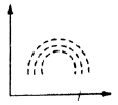
- r = 0
- r = -1
- r = 1
- r = 0.5
(정답률: 47%)
111. 시멘트 콘크리트 포장을 보수를 위한 패칭(Patching)공법의 시공 내용으로 가장 부적합한 것은?
- 포장의 파손부분을 쓸어낸다.
- 깨끗이 쓸어낸 뒤 텍코팅한다.
- 슬래브 및 노반의 면 고르기를 한다.
- 필요 기간 동안 충분한 양생작업을 한다.
(정답률: 61%)
112. 레크레이션(Recreation) 수용능력의 기본적 구성요소가 아닌 것은?
- 관리목표
- 이용자 태도 및 선호도
- 물리적 자원에의 영향
- 이용압에 대한 회복능력
(정답률: 41%)
113. 토양분류에 대한 설명으로 옳지 않은 것은?
- 현재까지 토양목은 총 12개목으로 분류되어 있다.
- 생성학적으로 보아 동질성을 가지는 특성에 따라 분류한 것이 아목이다.
- 특징적 층위의 존재 여부와 정렬순서에 따라 분류한 것을 대군이라 한다.
- 생성론적 토양분류는 목, 아목, 대군, 아군의 4개로 구성된다.
(정답률: 42%)
114. 공원 내 이동식 축구 골대에 매달려 장난을 치다 골대가 넘어져 부상을 입었을 경우 책임 유형은?
- 설치하자
- 관리하자
- 설계하자
- 시공하자
(정답률: 51%)
115. 조경 수목의 종자 훈증제(fumigant) 구비조건으로 옳지 않은 것은?
- 휘발성이 작아야 한다.
- 불연성이고 비폭발성이어야 한다.
- 종자의 활력에 영향을 주지 말아야 한다.
- 가격이 싸고 사용할 때 증발이 쉬워야 한다.
(정답률: 48%)
116. 다음 중 잔디깎기에 가장 약한 잔디는?
- 버뮤다그라스
- 벤트그라스
- 들잔디
- 켄터키블루그라스
(정답률: 42%)
117. 수림지 관리에 있어서 풀베기 작업의 검토 항목이 아닌 것은?
- 계속년수
- 현존량
- 연간회수
- 작업시기
(정답률: 55%)
118. 공사 발주자 측의 입장에서 공사운영을 도급공사에서 직영공사 형태로 해 나갈 경우 현장에서의 노무관리 중 예상되는 상황이 아닌 것은?
- 관리책임이나 책임소재가 명확하다.
- 노무자의 업무가 타성화 되기 쉽다.
- 노무자의 인건비를 정확히 파악할 수 있다.
- 번잡한 노무관리를 하지 않고, 관리의 단순화를 기할 수 있다.
(정답률: 38%)
119. 부지관리에 있어서 이용자에 의해 생태적 악영향을 미치는 주된 원인으로 가장 거리가 먼 것은?
- 반달리즘(Vandalism)
- 요구도(Needs)
- 무지(Ignorance)
- 과밀이용(Over-Use)
(정답률: 57%)
120. 다음 중 건설용 장비인 크레인, 이동식 크레인, 리프트 등을 사용하여 작업하는 때 작업시작 전에 공통적으로 점검하여야 하는 사항은? (단, 산업안전보건법령상의 내용 적용)
- 바퀴의 이상 유무
- 전선 및 접속부 상태
- 브레이크 및 클러치의 기능
- 작업면의 기울기 또는 요철 유무
(정답률: 54%)